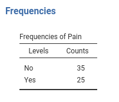

Logistic analysis in jamovi
(by Marcello Gallucci)
Draft version, mistakes may be around , GAMLj version ≥ 0.9.7
In this example we analyze a 3 X 2 X 2 design, with a dichotomous dependent variable. We employ logistic regression for modelling the dichotomous dependent variable.
We run the analyses with the GAMLj module in jamovi. One can follow the example by downloading the cvs file and open it in jamovi. Be sure to install GAMLj module from within jamovi library.
The data are from a SAS User’s Guide example, 51.2. There you can find similar analyses in SAS.
The research design
Here is the data description from SAS User’s Guide:
“The data set Neuralgia contains five variables: Treatment, Sex, Age, Duration, and Pain. The last variable, Pain, is the response variable. A specification of Pain=Yes indicates there was pain, and Pain=No indicates no pain. The variable Treatment is a categorical variable with three levels: A and B represent the two test treatments, and P represents the placebo treatment. The gender of the patients is given by the categorical variable Sex. The variable Age is the age of the patients, in years, when treatment began. The duration of complaint, in months, before the treatment began is given by the variable Duration.”
The cross-tab of frequencies of participants Treatment
by Sex is in the next table (in jamovi
frequencies -> Contingency tables), and
these are the first independent variables we analyze.

The base-rate frequencies for Pain (the dependent
variable) are in the table.

Age and Duration are continuous variables (disregard the little icon indicating the variable format you see in jamovi variables list, we’re are going to use them as continuous). Their descriptives are the following:

Understanding the problem
We want to understand how the pain reported by the patients is affected by the Treatment and if this relationship is moderated by gender. Furthermore, the influence of Age and Duration is of interest as well.
We first start with Treatment and Sex and
their interaction as predictors of Pain. Then we include
also Age and Duration. In the terminology of
the general linear model, these two analyses correspond to an ANOVA and
an ANCOVA, respectively. Because the dependent variable is a dichotomous
variable, we employ a logistic model. In the logistic model there’s no
variance to be analyzed (is the deviance or likelihood that is
analyzed), thus we should intend the terminology used here as meaning
ANOVA-like and ANCOVA-like models.
The logistic model predicts the probability of being in one group
defined by the dependent variable over the probability of being in the
other group (the odd). Jamovi GAMLj predicts the probability of the
group indicated by the last level of the dependent variable, in this
example being Pain=Yes. If you are comparing the present
results with the analyses in the SAS
User’s Guide, please keep in mind that SAS predicts
Pain=No, so the results are equivalent but the effects go
in the opposite direction. One can change the direction of the effects
by re-coding the Pain variable.
Interpretation
Recall that the predicted values of the models are the logit
(logarithm of the odd) of being in pain (Pain=Yes) over not
being in pain (Pain=Yes). Thus, the model coefficients are
expressed in the logit scale ( log(odd) ) . A clearer scale is
obtained by removing the logarithm from the logit, obtaining
coefficients expressed in the odd scale. This is the exp(B)
column of the results tables: exp(B) is an odd-ratio. The
plots and the estimated marginal means are conveniently transformed in
the probability scale, so they can be interpreted directly as the
probability of being in pain (P(Pain=Yes)).
ANOVA-like logistic model
Let’s start with predicting Pain with Sex
and Treatment. In GAMLj
generalized linear model we select the
logistic model, push the Pain variable in the
Dependent Variable field and Sex and
Treatment in Factors.

R-squared and model info
As soon as we fix the variables, results are displayed in the tables, with the first table showing some info about the model.

Here we find the R-squared, that gives information about the goodness
of fit of the model (see technical details
for more info). Our ability to predict pain increases of 26% thanks to
the independent variables as compared to using the base-rate
probabilities of Pain.
Omnibus tests

The omnibus Chi-Squared tests inform us on the main effects and
interactions statistical significance. We can see there that we obtained
a main effect of Treatment and one of Sex.
Thus, on average, the probability of being in pain changes across
treatments and it is different between women and men. There is clearly
no interaction (\(\chi^2\)=0, p=1).
To interpret the main effects, let’s ask for the plot in the
Plots tab:
and see what we obtain:

The effect of Sex is due to the fact that the
men group is much more likely to report pain than the group
of women. The effect of Treatment is mainly
due to the higher pain report rate in the P treatment than in the other
two conditions. The treatments are working.
Leaving the comfort zone (technical)
(you can skip this if you’re not interested in beautiful details and some fundamental laws of statistics)
We should stop for a while and think very broadly about these
results, because they have many things to teach us in general terms. We
can see that Sex has a statistical significant effect on
Pain, but in the plots the confidence intervals seem to
overlap quite a bit. One may be inclined to believe that it is about the
3 by 2 design weird error deviance being included in the SE computation,
but it is not. We can remove Treatment and still find that
Sex is significant but the confidence intervals of the two
means of gender overlap.


Some people may find this strange, because of the common belief that two overlapping confidence intervals should correspond to a non-significant difference. However, this belief is wrong.
Andrea Knezevic at the Cornell University and Prasanna Parasurama at Atipica explain this in a clear way. Here is a shorter version:
Take a z-test for simplicity. Given two means a and b, their significance depends on the inequality \({a-b} > 1.96 \cdot \sqrt{{SE_a}^2+{SE_b}^2}\). The confidence intervals of the two means are not-overlapping if \({a-b} > 1.96 \cdot ( \sqrt{{SE_a}^2}+\sqrt{{SE_b}^2})\). Thus, as \(a-b\) increases, the significance is reached first by the test with smaller right term of the inequality. By Jensen inequality, we know that \(\sqrt{{SE_a}^2+{SE_b}^2} < \sqrt{{SE_a}^2}+\sqrt{{SE_b}^2}\) therefore there will be some values of \(a-b\) where the z-test is significant but the means confidence intervals overlap. Our examples shows exactly this.
From the same reasoning we can derive that the opposite is not true: If the confidence intervals do not overlap, the z-test must be significant.
Coefficients
If one needs (and seldom one does in these cases), one can look at the model coefficients, the regression coefficients.

Skipping the intercept (recall that nobody interprets the intercept
:-) ), the first coefficient is Sex1: B=0.896. The
exp(B) is 2.449. This means that the odd of reporting
Pain=yes over Pain=No for men (see
Contrast column) is 2.499 times larger than for the average
of the sample ((M,F)). This comparison may sound awkward,
but the awkwardness can be fixed. Recall that GAMLj default coding for
factors is deviations, meaning that factors are coded such
that each group (but the first) is compared with the average of the
sample. When only two groups are present, a better coding is
simple, that “simply” compares the two groups. We can set
the coding in Factor Coding.

The B and exp(B) parameters associated with Sex have
changed, although the z-test and p-value did not. The odd-ratio
associated with Sex is now exp(B)=6, and the contrast says
M-F- This means that the odd of reporting the pain is 6
times larger for men than for women.
Indeed, if we ask for the estimated marginal means of Sex averaging across Treatment we see the probabilities of reporting pain for the two genders.

We can check that the probability of pain is .614 for men and .209 for women, which yields:
- odd for men \({odd_M}={.614 \over {1-.614}}=1.58\)
- odd for women \({odd_F}={.209 \over {1-.209}}=.264\)
- the odd for men is \(\exp{B}={1.58 \over .264} =6\) times lager than the odd for women
The other coefficients can be interpreted along the same line.
ANCOVA-like model.
Now we add Duration and Age as covariates,
and we see how they influence Pain- We go back to the
variables set-up and add them in the Covariates field.

Omnibus tests
Results show that Duration does not have a significant
effect on Pain, whereas Age does. We can check
the direction of the Age effect by looking at the
parameters.
The effect of Age is positive, B=0.268, and the odd-ratio is larger then 1, exp(B)=1.30. The older one gets, the more pain one reports.
As usual, a picture is worth a thousand words.
 The older one gets, the more pain one reports, and the critical age
seems to be around 70 years, where chanches of reporting pain
considerably increase.
The older one gets, the more pain one reports, and the critical age
seems to be around 70 years, where chanches of reporting pain
considerably increase.
As regards Treatment we can state that
Treatment has still an effect even when Age
and Duration are kept constant.
Moderation model
The last interesting question is whether treatment has a different
effect depending on the patient’s age. To answer this question we should
simply add the interaction Treatment*Age in the model and
plot the interaction plot. I find it easier to plot Age on
the x-axis and show the probabilities of pain for different treatments.
Let’s do that.
Set-up

Omnibus tests

As suspected, there is an interaction between Treatment
and Age, so it means that the efficacy of the treatments
depends on the patient’s age. The plot will tell us how.
Plot

First, the placebo group reports high rates of pain independently of age (blue line). For younger people (age<70) the two treatments A and B are beneficial, because the probability of reporting pain is very low. When patients get older, treatments are not so effective any longer, because the probabilities increase and converge to high rates for all three groups.
This may very well conclude the analyses.